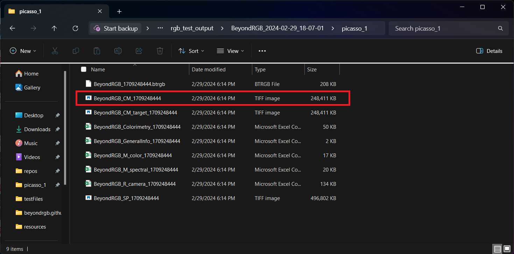
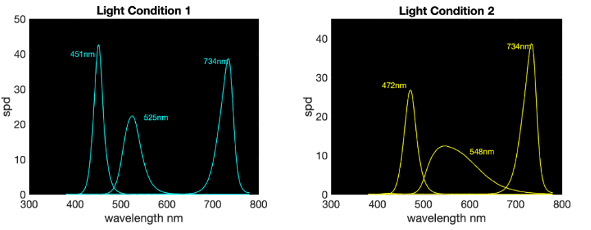

Frequently Asked Questions
Is this software free or does it cost money?
BeyondRGB is a free and open-source software. You can install and run BeyondRGB free of charge,
all that is needed is proper lighting equipment and a standard RGB camera.
Why is BeyondRGB taking so long to install? Why do I still see the installation gif?
BeyondRGB should not actually take too long to install onto your computer. Sometimes the installation gif will
remain on screen even after the installation has completed. This is a known bug.
You should see the BeyondRGB icon appear on the desktop when it is finished loading. Once it is finished you can right click on the icon on the taskbar
and manually close the window, which should get rid of the installation gif. Alternatively you can use the task manager as well.
Why is my Mac saying "Unidentified developer" before installation?
Mac computers have a built in safety system to prevent users from installing untrusted or malicious
software. Applications that are "signed" are considered trustworthy by Mac, however signing
an application requires money.
This goes against BeyondRGB's intent to be a free, open source software. Even though BeyondRGB is not signed, it is still safe to install. See this video to learn how to bypass the warning.
This goes against BeyondRGB's intent to be a free, open source software. Even though BeyondRGB is not signed, it is still safe to install. See this video to learn how to bypass the warning.
Reccommended specs for batch processing?
So long as your computer and operating system are compatible with BeyondRGB, your machine should be able to handle batch processing.
Image processing uses a lot of disk space and may slow down your computer. We suggest closing other processes
(search browsers, applications, etc.) while BeyondRGB is processing an image. Once the imaging process is finished, your computer should return to its normal
performance.
Where is my color managed image?
Your color managed image should appear in the folder that was selected during the "Output Destination" step during Processing.
The color managed image will be a .TIFF file; the filename will begin with the prefix "BeyondRGB_CM_" followed by a string of numbers.

Sometimes the image viewers say "error not found", but will then load the image fine?
This is a known issue, it simply has to do with the way the image is loaded.
Unless a error alert popup appears, the image should load given a few seconds.
Why is BeyondRGB slowing down my computer?
This is expected. BeyondRGB uses a lot of your computers CPU because spectral processing an image is a computationally expensive process.
We do not recommend trying to perform other tasks on your computer while BeyondRGB is processing an image. We also suggest closing other processes
(search browsers, applications, etc.) while BeyondRGB is processing an image. Once the process is finished, your computer should return to its normal
performance.
Can you use any type of camera with this?
You can use RGB cameras with this software. This also includes RGB cameras that have had their IR filter removed.
What lighting conditions are used for the example images?
These are the two LED lighting conditions that are used in the examples.

Can I use any two different lighting conditions?
The software will process any two sets of images. Whether or not a color accurate image will be produced depends on the lighting conditions, the target used, and the sensitivities of the camera.
Do I need to provide the spectral power distribution of my lights or the sensitivities of my camera for this software to operate?
No, the software will process images directly from the camera and under any two lighting conditions.
My image is not calibrating correctly.
Double check the following:
- that the correct target is chosen.
- nothing in the scene was moved when imaging between the two lighting conditions.
- ensure that there alignment targets in the scene.
- make sure the images have been sorted into the correct positions in the software application.
- when selecting the patches of the target for calibration, ensure that only the color patches have been selected and not edges.
- that the correct target is chosen.
- nothing in the scene was moved when imaging between the two lighting conditions.
- ensure that there alignment targets in the scene.
- make sure the images have been sorted into the correct positions in the software application.
- when selecting the patches of the target for calibration, ensure that only the color patches have been selected and not edges.
Can I image 3d objects?
No, the software is intended for 2d images.
Can I use my own color calibration target?
Yes follow this guide to use your own color caloibration target.